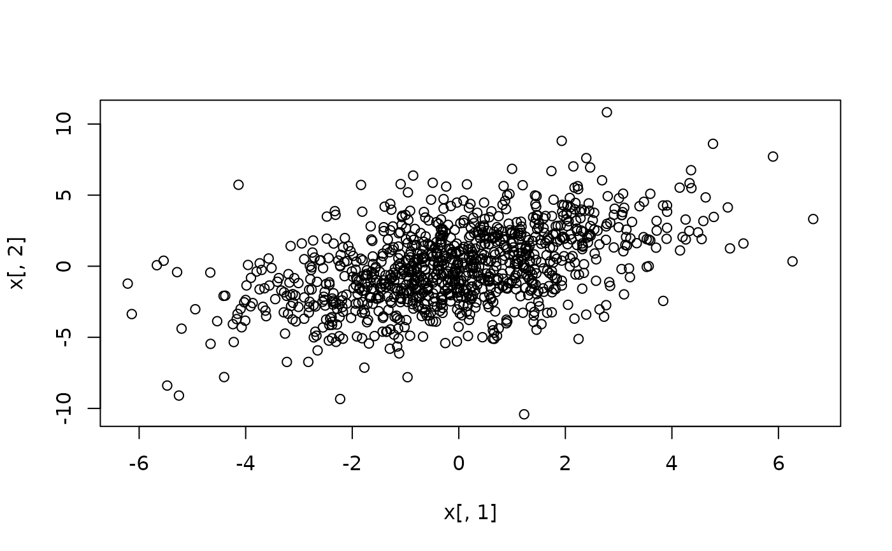

Function generates data from the multivariate t distribution given a covariance matrix, non-centrality parameter (or mode), and degrees of freedom.
number of observations to generate
positive definite covariance matrix
degrees of freedom. df = 0 and df = Inf
corresponds to the multivariate normal distribution
the vector of non-centrality parameters of length n
which specifies the either the modes (default) or non-centrality parameters
logical; triggers whether to generate data with non-centrality parameters or to adjust the simulated data to the mode of the distribution. The default uses the mode
a numeric matrix with columns equal to ncol(sigma)
Chalmers, R. P., & Adkins, M. C. (2020). Writing Effective and Reliable Monte Carlo Simulations
with the SimDesign Package. The Quantitative Methods for Psychology, 16(4), 248-280.
doi:10.20982/tqmp.16.4.p248
Sigal, M. J., & Chalmers, R. P. (2016). Play it again: Teaching statistics with Monte
Carlo simulation. Journal of Statistics Education, 24(3), 136-156.
doi:10.1080/10691898.2016.1246953
# random t values given variances [3,6], covariance 2, and df = 15
sigma <- matrix(c(3,2,2,6), 2, 2)
x <- rmvt(1000, sigma = sigma, df = 15)
head(x)
#> [,1] [,2]
#> [1,] 1.3042822 -2.0318613
#> [2,] 0.4853400 -0.9843646
#> [3,] -0.4545143 -2.8552338
#> [4,] -2.1102930 -1.9951739
#> [5,] 0.4620754 -0.8522892
#> [6,] -1.1569847 -5.6485164
summary(x)
#> V1 V2
#> Min. :-6.21426 Min. :-10.4157
#> 1st Qu.:-1.23958 1st Qu.: -1.8521
#> Median :-0.06359 Median : -0.1496
#> Mean :-0.05056 Mean : -0.0373
#> 3rd Qu.: 1.23545 3rd Qu.: 1.8817
#> Max. : 6.65206 Max. : 10.8285
plot(x[,1], x[,2])
